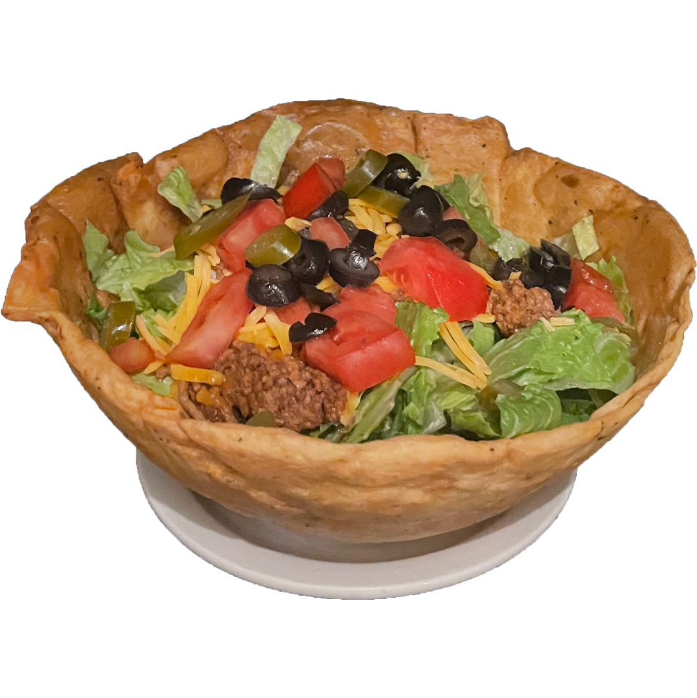
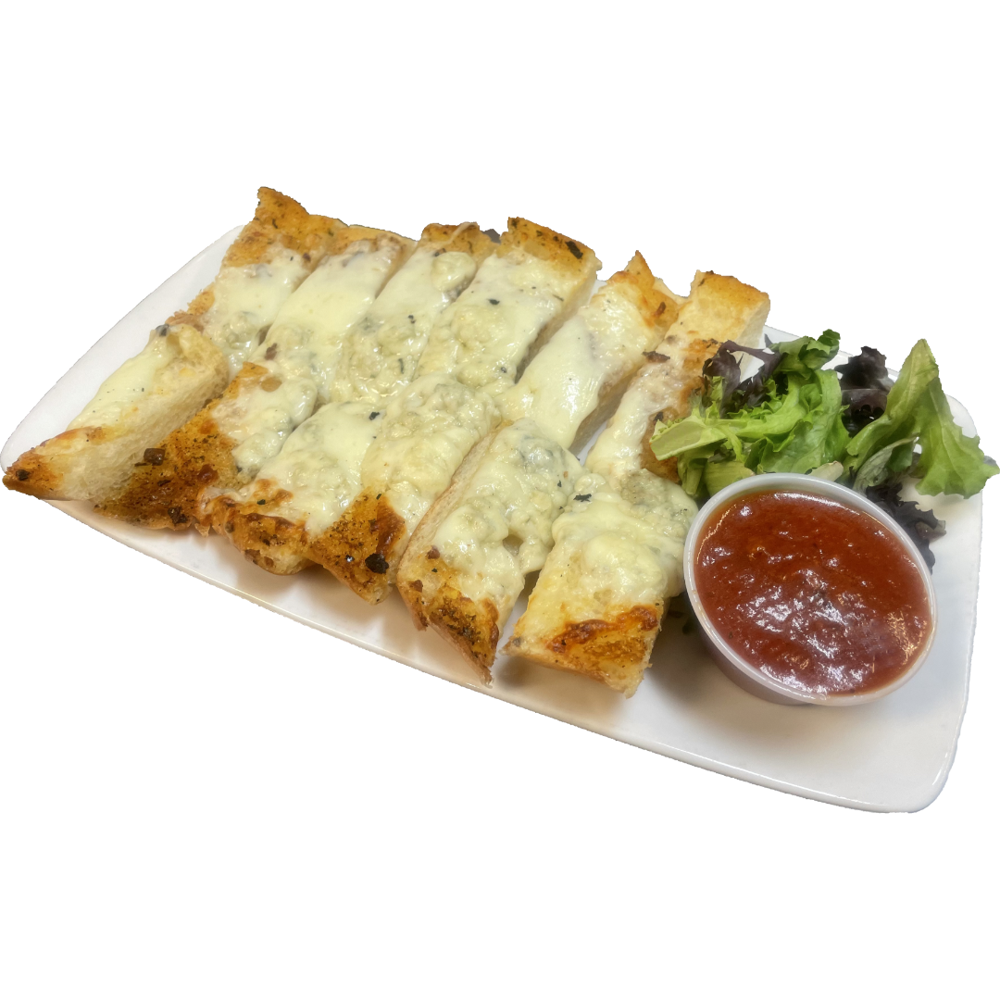
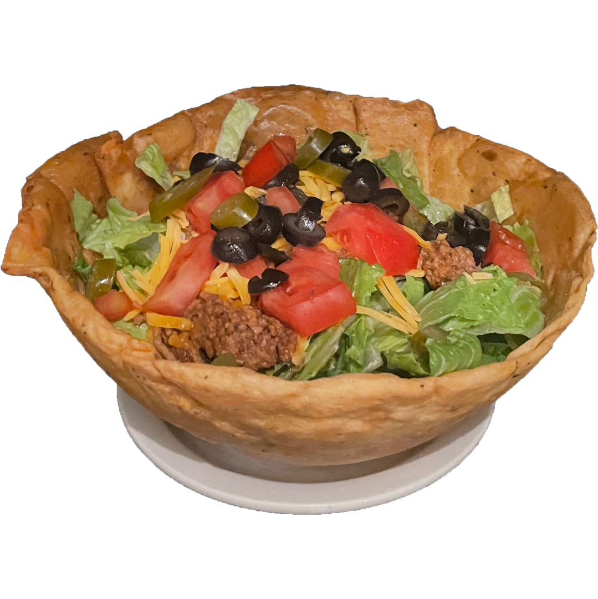
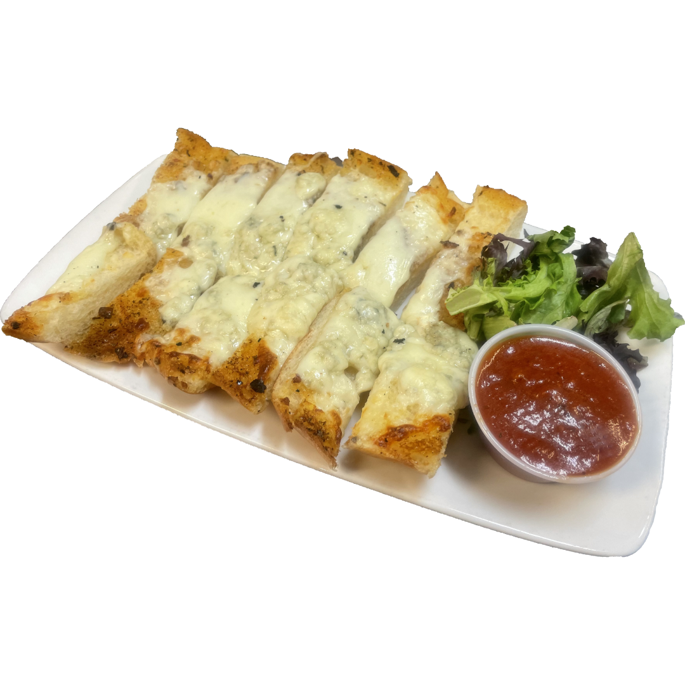
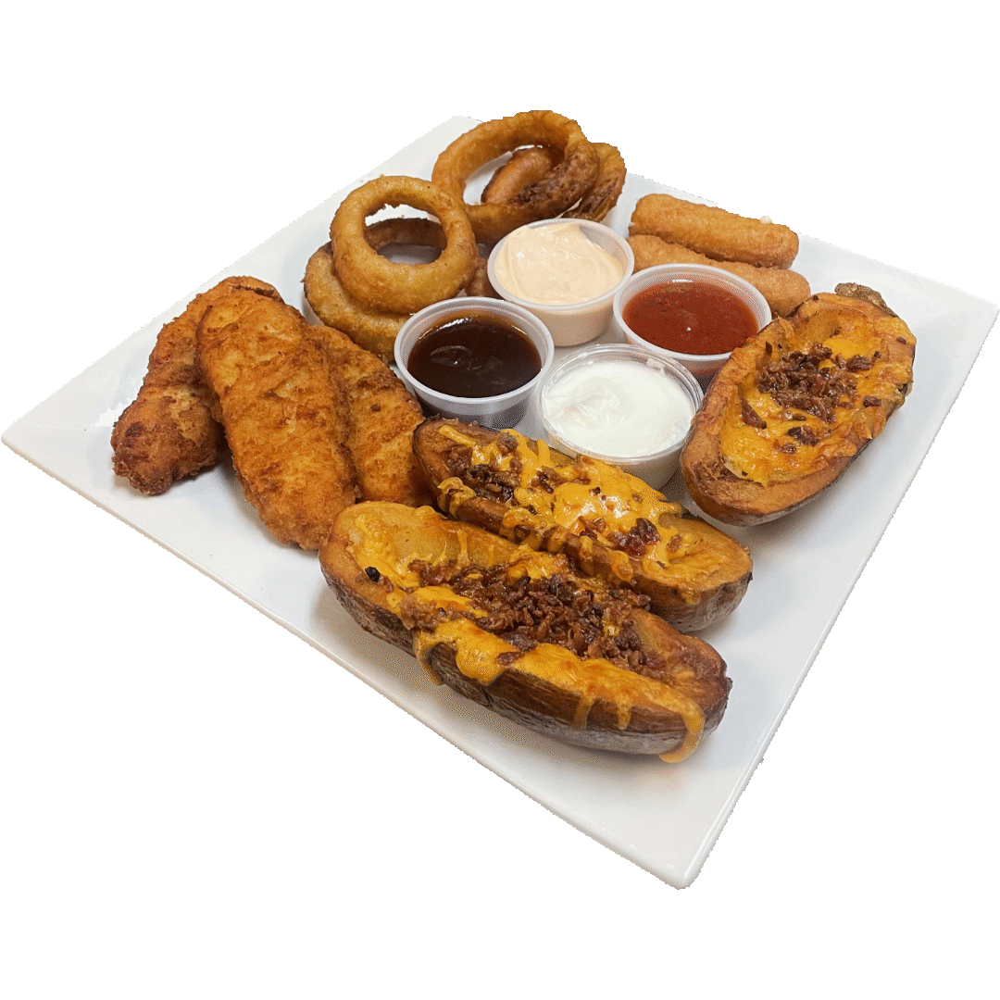
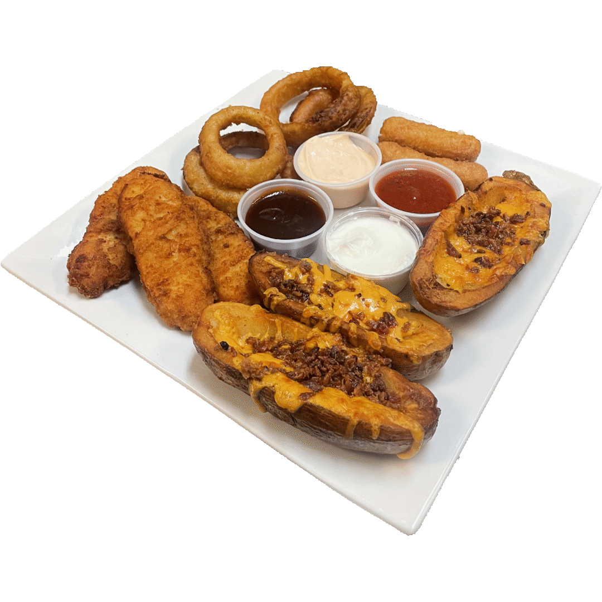

Köchenerfahrung
Kocherfahrung
Sei es eine klein Köche, in der alles auf Bestellung zubereitet wird.
Alleine arbeiten, ein riesiger Catering-Auftrag oder eine schnelllebige Warteschlange
Massenproduktion von essen. Ich habe Erfahrung in beiden Kochumgebungen.
Ich habe Erfahrung mit
Burger, Pastagerichte, Gerichte mit Schnitzel,
Frühstücksgerichte mit Eiern, Salate, Wraps.
Zubereitung von Saucen und Suppen.
Management, Wartung und Kundenservice
Ich habe auch Rezeptbücher und Anleitungsposter erstellt.
für Köchen, in denen ich gearbeitet habe.
Ich habe Ersatzteile für Geräte gefunden und sie repariert.
Streichen Sie bei Bedarf, um den Arbeitsbereich professionell aussehen zu lassen.
Lösung Kundenbeschwerden und Problems,
zuzammen mit Essenslieferung.
Fotos
Zubereitet und fotografiert von mir.

 



 

Jobs
Danas Time Out
258 Hamilton St, Geneva, NY 14456, USA Website Speisekarte (übersetzt) +1 (315)-781-2107Besetzte Positionen
(2021) Spülmaschine
(2022 - Okt 2024) Linienkoch und Vorbereitungskoch
(Okt 2024 - Feb 2025) Souschef
Stellenbeschreibung
Kochen und Zubereiten
Pastagerichte, Burger, TortillaWraps, Salate, verschiedene
Beilagen und, Tagesgerichte. Suppen und Soßen zubereiten.
Kochen und Zubereiten von Speisen für Zusammenkünfte.
Management
Köchenleitung wöhrend der Tagschicht.
Bei Nachtschichten war ich für 2-3 Arbeiter verantwortlich.
Erstellung von Rezeptblättern und Bedienungsanleitungen.
Reinigung, Instandhaltung und Organisation
Ich habe alle Gegenstände gereinigt, beschriftet und im
Trockenlager verstaut, von unserem Lebensmittellieferanten.
Ersatzteile finden, kleinere Reparaturen durchföhren
und Lackierarbeiten erledigen
Warum ich diesen Job gewählt habe
Das war mein erster Job.
Ein Freund erzählte mir, er brüchte einen Geschirrspüler.
Grund für meinen Weggang
Ich benötigte mehr Arbeitsstunden.
Das konnte dort nicht bereitgestellt werden.
(Club 86) Bagels & Cakes
476 Hamilton St, Geneva, NY 14456, USA Website Speisekarte (Übersetzt) +1 (315)-781-7643Besetzte Positionen
(Feb 2025 - Jetzt) Linienkoch und Vorbereitungskoch
(Feb 2025 - Jetzt) Auslieferungsfahrer
Stellenbeschreibung
Kochen und Zubereiten von Speisen
Salate, Sandwiches, Frühstücksgerichte, Tortillawraps.
Lebensmitteltransport
Transport großer Lebensmittelmengen zwischen Ihren
Restaurantstandorten.
Lieferung von Speisen und Catering für Kunden.
Reinigung & Organisation
Ich habe alle Gegenstände gereinigt, beschriftet und im trockenen
Abstellraum verstaut. zusammen mit üblichen Nachtreinigung
Warum ich diesen Job gewählt habe
Dies war nur eine vorübergehende Stelle zwischen Danas Time
Out und meiner Einwanderung nach Deutschland. Ich nutzte
diese Monate, um die Arbeit eines Lieferfahrers kennenzulernen,
damit ich zukünftig als Köchenchef/Köchenleiter Mitarbeiter
in dieser Position angemessen führen kann.
Grund für meinen Weggang
As This was a Just a temporary job this was the plan all allong
Current employers where made aware of this at time
of being hired.